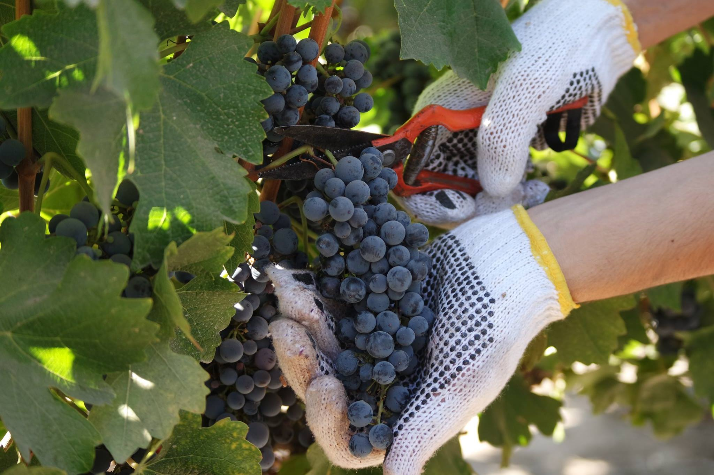

Monumentos
| Plaza Mayor | Campo Grande | Iglesia San Pablo |
|---|---|---|
 |
||
|
La Plaza Mayor de Valladolid, con la estatua del Conde Ansúrez centrada en la plaza, es el principal punto de encuentro de turistas y vallisoletanos. |
El Campo Grande de Valladolid, conocido en un primer momento como “Campo de la Verdad”, fue creado a finales del siglo XVIII y desde entonces compone un agradable oasis en el que tanto locales como turistas adoran perderse. |
San Pablo es uno de los edificios más representativos de la ciudad y sin duda uno de los monumentos que más recuerdan los turistas que visitan Valladolid. La plaza en la que se encuentra constituye un importante punto de reunión para los vallisoletanos. |
Cosas que hacer
| De Tapas | Enoturismo | Leyenda del Pisuerga |
|---|---|---|
 |
 | |
|
LValladolid es una de las ciudades que más ha trabajado las tapas en España. Existen múltiples zonas y locales para degustar tapas en Valladolid y disfrutar de tapas y raciones de sabores tradicionales y propuestas novedosas. |
Valladolid es la provincia más completa en vinos de España con cuatro denominaciones de origen. Los vinos y las bodegas de Valladolid forman parte de la cultura local y se han convertido en un gran atractivo turístico. |
Embarcar en La Leyenda del Pisuerga es conocer Valladolid de una forma diferente. Desde este majestuoso barco de dos pisos es posible contemplar el Puente de la Hispanidad, la Rosaleda, el Duque de Lerma y muchos otros monumentos de Valladolid. |